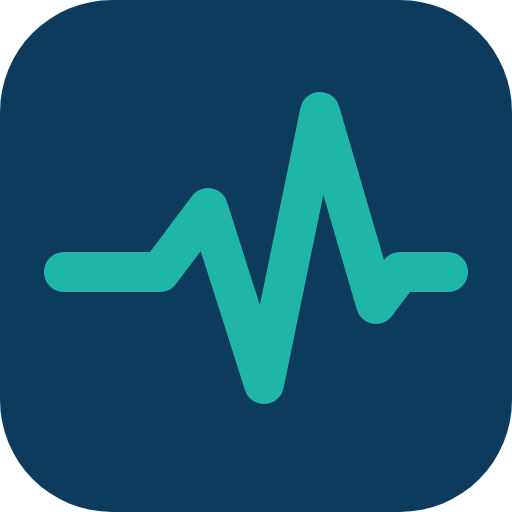

Deux métiers, une même exigence
Santé
Directeur médical à la Clinique Amen Bizerte, avec une expérience des systèmes d'information de santé. Membre du programme Cancer Zero depuis 2022.
Applications mobiles
Je conçois et développe seul des applications Android, de l'idée à la publication sur Google Play.
Mes applications
AdRadio
Radios web et podcasts, classés par genres, pays et langues. Alarme radio, Android Auto, Google Cast et interface adaptée aux tablettes. Disponible en test sur Google Play.

Ad-Med Médicaments
Application hors ligne pour Android et iPhone, destinée aux médecins : médicaments regroupés par molécule, monographies, prix CNAM, classes thérapeutiques et interactions.
Actes Ad-Med
Recherche des 3 279 actes de la nomenclature générale des actes professionnels, sans connexion.
Cartes de visite
On photographie une carte, on vérifie les informations, et le contact est enregistré dans le téléphone, hors ligne.
CapPêche (en cours)
Application de pêche en bateau pour le nord tunisien : cartes marines, vent, vagues, épaves, trajets, points et prises.
Contact
Pour une question, une collaboration ou un retour sur mes applications : bh.adnen@gmail.com.